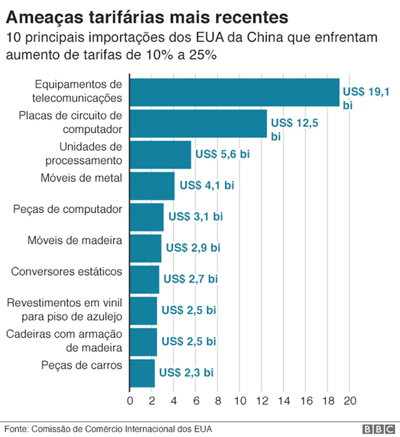
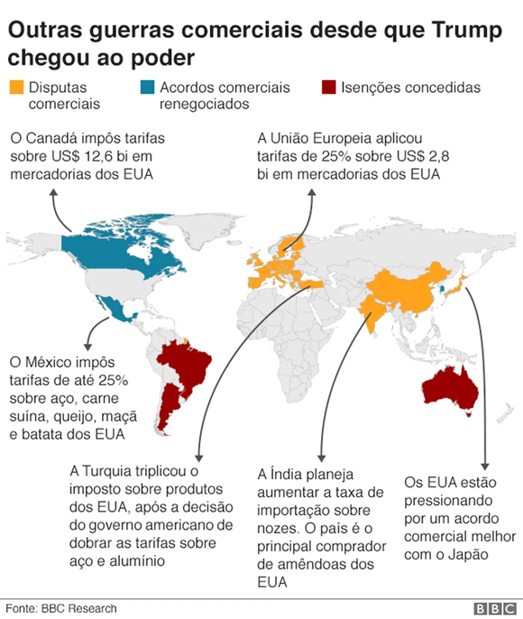
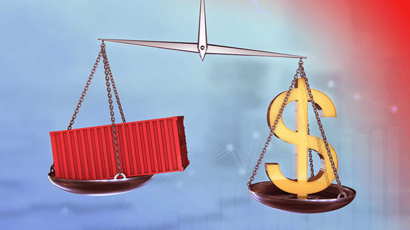

Texto 16 - O Comércio mundial
Conteúdo: Organização Mundial do Comércio; Balança Comercial; Exportações e importações; Globalização.
Objetivo: Relacionar as mudanças no comércio internacional no atual período da globalização.
Conteúdo: Organização Mundial do Comércio; Balança Comercial; Exportações e importações; Globalização.
Objetivo: Relacionar as mudanças no comércio internacional no atual período da globalização.
Digite seu nome
Na aula passada, discutimos as redes geográficas e seu papel crucial nos fluxos internacionais. Agora, daremos um passo adiante ao explorar o comércio mundial.
Analisaremos as dinâmicas da balança comercial global e entre os países, destacando temas como a Organização Mundial do Comércio, balança comercial, exportações e importações, e como esses elementos se relacionam com a globalização.
Nosso objetivo é compreender as transformações no comércio internacional neste período de intensa globalização, examinando como esses fatores impactam as economias nacionais e as relações internacionais.
O protecionismo é uma política econômica que visa proteger as indústrias nacionais da competição estrangeira, através da imposição de barreiras comerciais, como tarifas sobre importações, quotas de importação e subsídios aos produtores domésticos. Embora o protecionismo possa oferecer benefícios de curto prazo para as indústrias domésticas, ele também é frequentemente alvo de críticas devido aos seus potenciais efeitos negativos.
Impacto na Eficiência Econômica: O protecionismo pode reduzir a eficiência econômica ao proteger indústrias ineficientes da competição estrangeira. Por exemplo, a imposição de tarifas sobre produtos importados pode incentivar a produção interna de bens que poderiam ser obtidos de forma mais eficiente no exterior.
Aumento dos Preços para os Consumidores: As barreiras comerciais, como tarifas de importação, tendem a aumentar os preços dos produtos importados para os consumidores domésticos. Um exemplo disso é a imposição de tarifas sobre painéis solares importados pelos Estados Unidos, que resultou em um aumento significativo nos preços desses produtos para os consumidores americanos.
Retaliação e Guerra Comercial: O uso de políticas protecionistas por um país pode desencadear medidas de retaliação por parte de seus parceiros comerciais. Um exemplo recente disso foi a guerra comercial entre os Estados Unidos e a China, onde ambos os países impuseram tarifas sobre uma ampla gama de produtos, prejudicando o comércio internacional e aumentando as tensões econômicas.

Fonte: g1.comImpacto nas Relações Internacionais: O protecionismo pode prejudicar as relações diplomáticas e comerciais entre os países. Por exemplo, as medidas protecionistas unilaterais podem ser vistas como desleais pelos parceiros comerciais e podem minar a confiança e a cooperação internacional, como foi o caso das disputas comerciais entre o Japão e a Coreia do Sul em 2019, que levaram a um resfriamento nas relações bilaterais.

Fonte: g1.comA balança comercial é uma medida importante para entender a saúde econômica de um país e sua posição no comércio internacional. No entanto, uma análise crítica desse conceito revela nuances importantes que vão além das simples métricas de superávit e déficit.

Fonte: freepick.comNão Considera a Qualidade dos Produtos e Serviços: A balança comercial tradicionalmente se concentra apenas no valor monetário das exportações e importações, sem considerar a qualidade dos produtos e serviços envolvidos. Isso pode levar a uma interpretação inadequada da competitividade de uma economia no mercado global.
Não Considera o Valor Agregado: A análise da balança comercial muitas vezes não leva em conta o valor agregado dos produtos exportados e importados. Por exemplo, um país pode exportar matérias-primas a baixo custo, mas importar produtos manufaturados a um preço muito mais alto, o que pode distorcer a percepção do equilíbrio comercial.
Impacto das Cadeias Globais de Abastecimento: Em uma economia globalizada, muitos produtos passam por várias etapas de produção em diferentes países antes de serem finalizados e exportados. Isso pode complicar a análise da balança comercial, pois os componentes de um produto podem ser exportados e importados várias vezes antes de serem incorporados ao produto final.
Dependência de Fatores Externos: A balança comercial de um país pode ser influenciada por uma série de fatores externos, como flutuações cambiais, mudanças nos preços das commodities e políticas comerciais de outros países. Isso pode tornar difícil para um país controlar seu saldo comercial apenas por meio de políticas internas.
Não Considera o Investimento Estrangeiro: A análise da balança comercial muitas vezes não leva em conta o investimento estrangeiro direto (IED) e outros fluxos de capital, que podem ter um impacto significativo na economia de um país e na sua posição no comércio internacional.
Em 2020, a União Europeia foi o maior exportador de bens do mundo, representando aproximadamente 15% das exportações globais.
O comércio intra-ASEAN atingiu cerca de US$ 609 bilhões em 2019, destacando a importância do bloco na promoção do comércio regional.
O T-MEC, que entrou em vigor em julho de 2020, visa fortalecer a integração econômica entre México, Estados Unidos e Canadá, facilitando o acesso aos mercados e modernizando as regras comerciais.
O comércio intrarregional no Mercosul cresceu mais de 10% em 2020, apesar dos desafios econômicos causados pela pandemia de COVID-19.
Commodities são produtos básicos ou matérias-primas que são produzidos em grande escala e comercializados em mercados globais. Geralmente, esses produtos são homogêneos em qualidade e podem ser substituídos uns pelos outros. Exemplos comuns de commodities incluem produtos agrícolas (como trigo, milho, café, soja), minerais (como petróleo, minério de ferro, ouro), metais (como cobre, alumínio, prata) e recursos naturais (como água, madeira).
As commodities desempenham um papel vital no comércio global, mas também apresentam desafios e questões importantes a serem consideradas.
Vulnerabilidade a Flutuações de Preços: Os preços das commodities são altamente voláteis e podem ser afetados por uma série de fatores, incluindo condições climáticas, oferta e demanda global, políticas governamentais e instabilidade geopolítica. Isso pode criar incerteza para os países exportadores e afetar suas receitas e economias.
Impacto Ambiental e Social: A exploração e produção de commodities, como petróleo, minerais e produtos agrícolas, muitas vezes têm impactos negativos no meio ambiente e nas comunidades locais. Isso inclui desmatamento, poluição da água e do ar, degradação do solo e violações dos direitos humanos, especialmente em países em desenvolvimento.
Desigualdades Econômicas: A dependência de commodities pode contribuir para desigualdades econômicas e sociais em países exportadores, concentrando a riqueza e o poder nas mãos de poucos, enquanto a maioria da população enfrenta pobreza e falta de acesso a serviços básicos.
Instabilidade Econômica: A dependência excessiva de commodities pode tornar as economias vulneráveis a choques externos e instabilidade econômica. Isso pode levar a ciclos de boom e bust, com crescimento rápido seguido por recessão e estagnação.
P: Como as novas tendências do marketing mundial influencia o jeito que as pessoas escolhem o que comprar?
R: A publicidade impacta o comportamento do consumidor ao tornar os produtos e serviços mais relevantes e atraentes para eles. Ao receberem mensagens que são direcionadas especificamente para seus interesses, preferências e necessidades, os consumidores são mais propensos a se identificar com as marcas e a considerar a compra dos produtos ou serviços anunciados.
P: Por que é vantajoso para o Brasil ser um grande exportador de commodities em termos econômicos? E quais são as desvantagens dessa dependência?
R: A posição do Brasil como um grande exportador de commodities é vantajosa porque proporciona uma fonte significativa de receita para o país, contribuindo para o crescimento econômico e a geração de empregos. Além disso, o Brasil possui vastos recursos naturais, como produtos agrícolas e minerais, que são altamente demandados no mercado internacional. No entanto, essa dependência pode tornar a economia vulnerável a flutuações nos preços das commodities e a instabilidades no mercado global, além de limitar o desenvolvimento de outras indústrias e setores econômicos.
P: Qual é o impacto do aumento das tarifas alfandegárias pelos países pobres sobre os produtos industriais dos países ricos? Como essa medida pode afetar o desenvolvimento tecnológico nacional e as relações comerciais internacionais?
R: O aumento das tarifas alfandegárias pelos países pobres sobre os produtos industriais dos países ricos pode gerar uma redução na importação desses produtos, incentivando o desenvolvimento de indústrias nacionais e o investimento em tecnologia para a produção local. Isso pode impulsionar o crescimento econômico e a criação de empregos nos países pobres. No entanto, essa medida também pode levar a retaliações por parte dos países ricos, resultando em uma guerra comercial e prejudicando as relações comerciais internacionais. Além disso, o aumento das tarifas pode encarecer os produtos para os consumidores locais e diminuir a variedade de produtos disponíveis no mercado.
Objetivo: Promover o livre comércio e resolver disputas entre países.
Desafios:
Desigualdade de poder entre países.
Impactos negativos nas economias locais.
Falta de transparência nas negociações.
Definição: Proteção das indústrias nacionais por meio de barreiras comerciais.
Efeitos Negativos:
Redução da eficiência econômica.
Aumento de preços para consumidores.
Risco de retaliação e guerras comerciais.
Importância: Mede o saldo entre exportações e importações.
Limitações:
Não considera a qualidade e o valor agregado dos produtos.
Influenciada por fatores externos e não inclui investimentos estrangeiros.
Dependência: Muitos países dependem de recursos naturais para exportação.
Impacto: Desequilíbrios podem afetar a economia e as indústrias locais.
Definição: Produtos básicos como petróleo, minerais e produtos agrícolas.
Desafios:
Vulnerabilidade a flutuações de preços.
Impactos ambientais e sociais negativos.
Contribuição para desigualdades econômicas.

SANTOS, Milton. A Natureza do Espaço: técnica e tempo, razão e emoção. São Paulo: EDUSP, 2002.
VESENTINI, José William. Geografia: o mundo em transição. Ensino médio. 2. ed. – São Paulo: Ática, 2013.